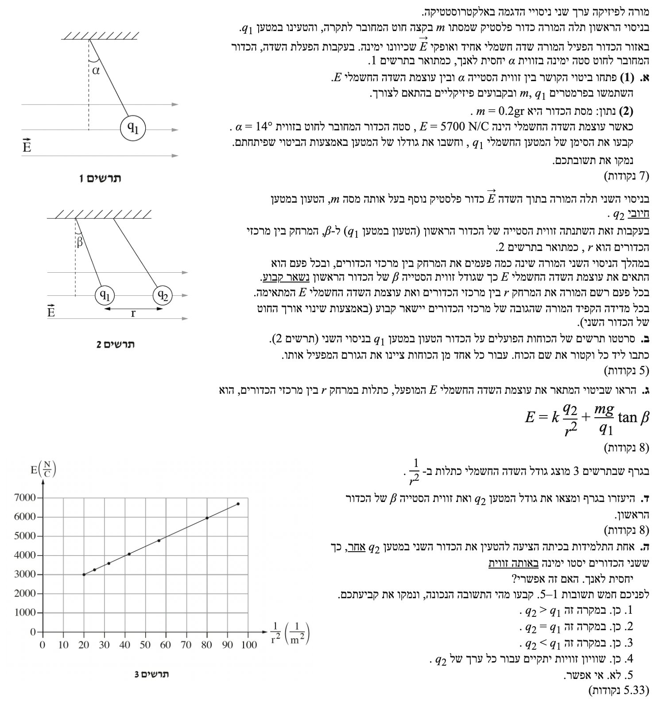

פתרון בגרות בפיזיקה - חשמל 2024 שאלה 1
שאלון 5 יח"ל
פתרון מלא ומודרך, צעד-אחר-צעד הכולל תרשימי כוחות מפורטים
עודכן:
--- --:--:--

[תמונת השאלה המקורית]
לא נמצאה תמונה בשם question-image.png באותה תיקייה.
מה נתון: כדור פלסטיק טעון במטען \( q_1 \) בעל מסה \( m \), תלוי על חוט מבודד. הוא נמצא בשדה חשמלי אחיד \( E \) שכיוונו ימינה. המערכת נמצאת בשיווי משקל (מנוחה) כאשר החוט סוטה ימינה בזווית \( \alpha \) ביחס לאנך. כיוון תאוצת הכובד \( g \) הוא כלפי מטה.
מה מחפשים: לפתח ביטוי אלגברי המציג את זווית הסטייה \( \alpha \) כפונקציה של עוצמת השדה החשמלי \( E \).
נוסחאות ועקרונות בשימוש:
- החוק הראשון של ניוטון (שיווי משקל): \(\Sigma \vec{F} = 0\)
- כוח הכובד: \(F_g = mg\)
- הקשר בין שדה חשמלי לכוח חשמלי (פיתוח מתוך הגדרת השדה \(E=F/q\)): \(F_E = |q|E\)
הצבה ופתרון:
נשרטט תחילה תרשים כוחות (FBD) עבור הכדור ונבחר מערכת צירים: ציר \( x \) ימינה וציר \( y \) כלפי מעלה.
נפרק את מתיחות החוט \( T \) לרכיבים. הרכיב האופקי הוא \( T\sin\alpha \) (שמאלה), והרכיב האנכי הוא \( T\cos\alpha \) (למעלה). הכדור במנוחה, לכן שקול הכוחות בכל ציר מתאפס:
\[ \Sigma F_x = F_E - T\sin\alpha = 0 \quad \Rightarrow \quad |q_1|E = T\sin\alpha \]
\[ \Sigma F_y = T\cos\alpha - mg = 0 \quad \Rightarrow \quad mg = T\cos\alpha \]
נחלק את המשוואה של ציר \( x \) במשוואה של ציר \( y \) כדי לבודד את הזווית ולהעלים את המתיחות הלא ידועה:
\[ \frac{T\sin\alpha}{T\cos\alpha} = \frac{|q_1|E}{mg} \quad \Rightarrow \quad \tan\alpha = \frac{|q_1|E}{mg} \]
מכיוון שאנו מחפשים את הזווית \( \alpha \) כפונקציה של השדה החשמלי \( E \) (המשתנה הבלתי תלוי בניסוי), נרשום את הביטוי שבו הזווית מבודדת (באמצעות פונקציית טנגנס הפוכה):
\[ \alpha = \arctan\left(\frac{|q_1|}{mg} \cdot E\right) \]
טיפ מורה:
1. על שיטת הפתרון: הטריק של חלוקת משוואות הדינמיקה זו בזו הוא דרך אלגנטית "להעלים" כוח לא רלוונטי (כמו המתיחות כאן). אבל רגע, אם אתם רגילים לפתור בדרך ה"רגילה" – חילוץ \( T \) ממשוואה אחת והצבתו בשנייה – אתם בסדר גמור! הדרך שלכם נכונה לחלוטין, בטוחה, ותוביל בדיוק לאותה התוצאה. חלוקת המשוואות היא פשוט עוד כלי שאפשר להוסיף לארגז הכלים כדי לחסוך זמן.
2. מה זה בכלל \( \arctan \)? במשוואה הסופית השתמשנו ב-\( \arctan \) (ארק-טנגנס). אל תיבהלו מהשם! זהו פשוט המונח המתמטי התקני לפעולה שאתם כבר מכירים היטב מהמחשבון שלכם כ- SHIFT + tan (לפעמים מופיע גם כ- \( \tan^{-1} \)). זוהי הפעולה ההפוכה לטנגנס - היא מקבלת את הערך המספרי של ה-\( \tan \) של זווית מסוימת (במקרה שלנו, הערך הוא יחס הכוחות), ומחזירה לנו את הזווית עצמה.
מה נתון:
נוספו נתונים מספריים. חובה לבצע המרת יחידות (MKS) למסה:
\( m = 0.2 \text{ gr} = 0.2 \cdot 10^{-3} \text{ kg} \).
עוצמת השדה החשמלי: \( E = 5700 \text{ N/C} \).
זווית הסטייה: \( \alpha = 14^\circ \).
תאוצת הכובד: \( g = 10 \text{ m/s}^2 \).
מה מחפשים: למצוא את הסימן של המטען \( q_1 \) ולחשב את גודלו.
נוסחאות ועקרונות בשימוש:
- הקשר בין כיוון הכוח לשדה: מטען חיובי ירגיש כוח בכיוון השדה, מטען שלילי ירגיש כוח בניגוד לכיוון השדה.
הצבה ופתרון:
קביעת הסימן: כיוון השדה החשמלי נתון ימינה. הכדור סוטה ימינה, כלומר הכוח החשמלי הפועל עליו הוא גם ימינה (באותו כיוון של השדה). מכאן נובע בהכרח כי מטען הכדור הוא חיובי.
חישוב הגודל: נשתמש בקשר שפיתחנו בסעיף א'(1):
\[ \tan\alpha = \frac{|q_1|E}{mg} \]
נבודד אלגברית את גודל המטען \( |q_1| \) מתוך המשוואה:
\[ |q_1|E = mg \tan\alpha \quad \Rightarrow \quad |q_1| = \frac{mg \tan\alpha}{E} \]
כעת, נציב את הנתונים (נקפיד להשתמש במסה בקילוגרמים):
\[ |q_1| = \frac{0.2 \cdot 10^{-3} \cdot 10 \cdot \tan(14^\circ)}{5700} \]
\[ |q_1| = \frac{2 \cdot 10^{-3} \cdot 0.2493}{5700} \]
\[ |q_1| = \frac{0.0004986}{5700} \approx 8.747 \cdot 10^{-8} \text{ C} \]
הסימן הוא חיובי וגודל המטען הוא: \( q_1 = 8.75 \cdot 10^{-8} \text{ C} \)
טיפ מורה:
1. מלכודת יחידות (MKS): מלכודת נפוצה מאוד בבגרויות היא לשכוח להמיר גרמים לקילוגרמים! תמיד, אבל תמיד, לפני שמציבים מספרים בנוסחאות דינמיקה וכוחות, ודאו שכל הנתונים במערכת יחידות סטנדרטית (MKS): מסה בקילוגרמים, מרחק במטרים, זמן בשניות.
2. שימוש בעקרונות בפיזיקה: שמתם לב שתחת "נוסחאות ועקרונות בשימוש" לא רשמנו כאן נוסחה מתמטית אלא עיקרון פיזיקלי מילולי (הקשר בין כיוון הכוח לשדה החשמלי)? בפיזיקה (ובמיוחד בבחינות הבגרות), לא תמיד יש לנו "נוסחה" להציב בה. לפעמים ההסתמכות שלנו היא על עיקרון פיזיקלי. במקרים כאלו, חובה לכתוב במילים את העיקרון שעליו התבססנו. דוגמאות נוספות לעקרונות חשובים שצריך להסביר במילים ולא להסתמך רק על נוסחה: "האנרגיה המכנית נשמרת מכיוון שאין עבודה של כוחות לא משמרים", "חוק שימור התנע תקף מכיוון שאין כוחות חיצוניים על המערכת", "על פי החוק השלישי של ניוטון הכוחות חייבים להיות זהים בגודל ומנוגדים בכיוון" או "על פי החוק השני של קפלר רדיוס המסלול יכסה שטחים שווים במרווחי זמן שווים". הנימוק המילולי הזה שווה לכם נקודות יקרות!
מה נתון: מכניסים למערכת כדור נוסף במסה \( m \) (זהה), הטעון במטען חיובי \( q_2 \).
המרחק בין מרכזי הכדורים הוא \( r \).
בעקבות זאת, זווית הסטייה של הכדור הראשון מגיעה לזווית חדשה, לה נקרא \( \beta \). תרשים 2 מראה כי הכדור הראשון נותר מוטה ימינה.
מה מחפשים: לשרטט תרשים כוחות הפועלים על הכדור הראשון (מטען \( q_1 \)) בניסוי השני. ליד כל וקטור כוח יש לציין את שמו ואת הגורם המפעיל אותו.
נוסחאות ועקרונות בשימוש:
- עקרון הסופרפוזיציה של כוחות חשמליים: הכדור ירגיש גם כוח מהשדה האחיד החיצוני וגם כוח דחייה נקודתי מהכדור השני (שניהם חיוביים).
הצבה ופתרון:
הכדור הראשון (השמאלי מבין השניים בתרשים) טעון חיובית. לכן הוא נדחה מהכדור השני (שגם הוא חיובי וממוקם מימינו). בנוסף, השדה האחיד מושך אותו ימינה. נשרטט את התרשים:
התרשים מעלה מציג את כל ארבעת הכוחות הפועלים על כדור \( q_1 \), גודלם והגוף המפעיל אותם.
טיפ מורה:
הקפידו תמיד למקם את זנבות כל הווקטורים במרכז המסה של הגוף (בנקודה אחת) כשמציירים FBD (תרשים גוף חופשי). ציון הגוף המפעיל הוא דרישה מפורשת בשאלה, לכן אין לדלג עליה!
מה נתון: המערכת של הניסוי השני נמצאת בשיווי משקל. המרחק בין הכדורים הוא \( r \), וזווית הסטייה של החוט היא \( \beta \).
מה מחפשים: להראות כי עוצמת השדה החשמלי \( E \) ניתנת לביטוי על ידי: \( E = k\frac{q_2}{r^2} + \frac{mg}{q_1}\tan\beta \)
נוסחאות ועקרונות בשימוש:
- חוק קולון לכוח בין מטענים נקודתיים: \(F_{12} = k\frac{q_1 q_2}{r^2}\)
- שיווי משקל (החוק הראשון של ניוטון): \(\Sigma \vec{F} = 0\)
הצבה ופתרון:
על סמך תרשים הכוחות שיצרנו בסעיף ב', נרשום את משוואות שיווי המשקל עבור הכדור הראשון בשני הצירים. כיוון שהחוט סוטה ימינה, הוא מושך את הכדור שמאלה ולמעלה, ולכן רכיב ה-x שלו מכוון שמאלה.
ציר ה-y:
\[ \Sigma F_y = T\cos\beta - mg = 0 \quad \Rightarrow \quad T = \frac{mg}{\cos\beta} \]
ציר ה-x:
\[ \Sigma F_x = q_1 E - F_{12} - T\sin\beta = 0 \]
נציב את הכוח החשמלי \( F_{12} \) לפי חוק קולון במשוואת ציר ה-x:
\[ q_1 E = k\frac{q_1 q_2}{r^2} + T\sin\beta \]
כעת, נציב את הביטוי שמצאנו עבור המתיחות \( T \) לתוך משוואה זו:
\[ q_1 E = k\frac{q_1 q_2}{r^2} + \left( \frac{mg}{\cos\beta} \right) \sin\beta \]
\[ q_1 E = k\frac{q_1 q_2}{r^2} + mg\tan\beta \]
כדי לבודד את הפונקציה \( E \), נחלק את כל המשוואה ב- \( q_1 \) (שאינו שווה לאפס):
\[ E = k\frac{q_2}{r^2} + \frac{mg}{q_1}\tan\beta \]
מ.ש.ל.
טיפ מורה:
כאשר מבקשים מכם "להראות ש...", התייחסו לזה כאל מתנה! התשובה הסופית כבר גלויה לכם. כל שעליכם לעשות הוא להתחיל מעקרונות יסוד ברורים (כמו חוקי ניוטון), לבצע אלגברה מסודרת ולהראות כיצד מגיעים אל קו הסיום.
מה נתון: נתון גרף לינארי של עוצמת השדה \( E \) כתלות ב- \( \frac{1}{r^2} \). מתוך הביטוי בסעיף ג', אנו רואים שיש כאן קשר קווי מהצורה \( y = mx + b \).
מה מחפשים: למצוא בעזרת הגרף את גודל המטען \( q_2 \) ואת זווית הסטייה החדשה \( \beta \).
נוסחאות ועקרונות בשימוש:
- משוואת ישר כללית: \(y = Sx + b\) (נסמן שיפוע ב-S כדי לא לבלבל עם מסה m).
- חישוב שיפוע מתוך שתי נקודות: \(S = \frac{\Delta y}{\Delta x}\)
הצבה ופתרון:
נשווה את הביטוי הפיזיקלי ממשוואת סעיף ג' למשוואת הישר המתמטית:
\[ E = (k \cdot q_2) \cdot \left(\frac{1}{r^2}\right) + \frac{mg}{q_1}\tan\beta \]
\[ y = S \cdot x + b \]
מכאן אנו מסיקים כי:
1. שיפוע הגרף \( S \) שווה ל- \( k \cdot q_2 \).
2. נקודת החיתוך עם ציר y (הקבוע \( b \)) שווה ל- \( \frac{mg}{q_1}\tan\beta \).
חישוב \( q_2 \):
נבחר שתי נקודות קריאות וברורות הנמצאות בדיוק על קו המגמה המשורטט בגרף. הנקודות המתאימות הן \( (20, 3000) \) ו- \( (80, 6000) \).
\[ S = \frac{6000 - 3000}{80 - 20} = \frac{3000}{60} = 50 \, \text{N} \cdot \text{m}^2 / \text{C} \]
נשווה את השיפוע לביטוי הפיזיקלי:
\[ k \cdot q_2 = 50 \quad \Rightarrow \quad 9 \cdot 10^9 \cdot q_2 = 50 \]
\[ q_2 = \frac{50}{9 \cdot 10^9} \approx 5.56 \cdot 10^{-9} \text{ C} \]
חישוב \( \beta \):
תחילה נמצא את נקודת החיתוך \( b \). נציב את אחת הנקודות (למשל \( x=20, y=3000 \)) ואת השיפוע במשוואת הישר:
\[ y = 50x + b \quad \Rightarrow \quad 3000 = 50 \cdot 20 + b \]
\[ 3000 = 1000 + b \quad \Rightarrow \quad b = 2000 \text{ N/C} \]
כעת נשווה לביטוי הפיזיקלי של \( b \). נחשב את הערך של \( \frac{mg}{q_1} \) באמצעות נתוני סעיף א':
\[ \frac{mg}{q_1} = \frac{0.2 \cdot 10^{-3} \cdot 10}{8.747 \cdot 10^{-8}} \approx 22864 \text{ N/C} \]
נציב במשוואת נקודת החיתוך:
\[ \frac{mg}{q_1}\tan\beta = 2000 \quad \Rightarrow \quad 22864 \cdot \tan\beta = 2000 \]
\[ \tan\beta = \frac{2000}{22864} \approx 0.0875 \]
\[ \beta = \arctan(0.0875) \approx 5.00^\circ \]
מטען הכדור השני הוא: \( q_2 = 5.56 \cdot 10^{-9} \text{ C} \)
זווית הסטייה החדשה היא: \( \beta = 5.00^\circ \)
טיפ מורה:
1. הוצאת נקודות מגרף: כלל ברזל בניתוח גרפים בפיזיקה - תמיד יש לקחת נקודות קריאות שנמצאות בדיוק על הקו הישר (קו המגמה). אין חובה שאלו יהיו נקודות המדידה (הסימונים בגרף), ומותר להשתמש בהן רק אם הן באמת יושבות במדויק על הקו שהעברתם. הקו הישר מייצג את "הממוצע" שמקטין שגיאות מדידה אקראיות, ולכן עליו אנחנו צריכים להתבסס.
2. לינאריזציה: היכולת להפיק מידע (קבועים פיזיקליים) מתוך שיפוע ונקודת חיתוך של "גרף מיושר" היא אחת המיומנויות החשובות ביותר בפיזיקה, ומופיעה כמעט בכל בחינת בגרות בשאלה של ניתוח תוצאות ניסוי. זכרו תמיד את שיטת העבודה: פיתוח תיאורטי -> התאמה לתבנית מתמטית -> חילוץ מהגרף.
מה נתון: תלמידה מציעה להטעין את הכדור השני במטען חיובי \( q_2 \) אחר, כך ששני הכדורים יסטו ימינה באותה זווית יחסית לאנך. יש להניח שמקומות התלייה של הכדורים לא השתנו (כדור 1 משמאל, כדור 2 מימין). הכדורים בעלי מסה זהה \( m \). חשוב: נתון במפורש בשאלה ששני המטענים חיוביים.
מה מחפשים: לקבוע האם המצב הזה אפשרי מבחינה פיזיקלית (ולבחור את המסיח הנכון מבין 5 האפשרויות), ואם כן, מהן תכונותיו של המטען החדש בהשוואה למטען המקורי.
נוסחאות ועקרונות בשימוש:
- עקרון שיווי משקל: כדי ששני כדורים בעלי מסה זהה יסטו באותה זווית \(\theta\), רכיב המתיחות האופקי (\(T_x = mg\tan\theta\)) המאזן את הכוחות החשמליים האופקיים, חייב להיות זהה עבור שניהם.
הצבה ופתרון:
נקודה קריטית לפני שניגשים למשוואות: נאמר במפורש בשאלה ששני המטענים (\( q_1 \) ו-\( q_2 \) החדש) הם חיוביים. עובדה זו קריטית להמשך, כיוון שהיא מבטיחה לנו שפועל ביניהם כוח דחייה ודאי. לולא היינו יודעים זאת, היינו חייבים לשקול גם אפשרות ש-\( q_2 \) שלילי (כוח משיכה), מה שהיה מוסיף תרחישים שצריך לפסול.
נגדיר את הכיוון ימינה ככיוון החיובי. נרשום את שקול הכוחות החשמליים האופקיים (המאוזנים על ידי החוט) עבור כל אחד מהכדורים.
עבור כדור 1:
השדה מושך אותו ימינה (\( q_1 E \)), והכדור השני דוחה אותו שמאלה בכוח \( F_{12} \) (דחייה ודאית כאמור).
\[ \Sigma F_{1x} = q_1 E - F_{12} \]
עבור כדור 2:
השדה מושך אותו ימינה (\( q_2 E \)), וכדור 1 דוחה אותו ימינה בכוח \( F_{12} \).
\[ \Sigma F_{2x} = q_2 E + F_{12} \]
מכיוון שאנו דורשים שאותם כוחות חשמליים כוללים יאזנו את החוט (כדי לקבל אותה זווית בדיוק), נשווה בין המשוואות:
\[ q_1 E - F_{12} = q_2 E + F_{12} \]
נרכז את האיברים של השדה לאגף אחד:
\[ q_1 E - q_2 E = 2F_{12} \quad \Rightarrow \quad (q_1 - q_2)E = 2F_{12} \]
ניתוח פיזיקלי של התוצאה: כוח הדחייה החשמלי \( F_{12} \) ביניהם הוא חיובי בהכרח. עוצמת השדה \( E \) גם היא מספר חיובי. לכן, כדי שאגף שמאל במשוואה יהיה חיובי ויקיים את השוויון, חייב להתקיים:
\[ q_1 - q_2 > 0 \quad \Rightarrow \quad q_1 > q_2 \]
התרחיש אפשרי בהחלט. האפשרות הנכונה היא זו האומרת שהמטען השני צריך להיות חיובי אך קטן בגודלו מהמטען הראשון (\( q_1 > q_2 > 0 \)).
טיפ מורה: חשיבה דרך מקרי קיצון
בואו נלמד כלי חשיבה עוצמתי מאוד בפיזיקה שיכול לחסוך לכם המון אלגברה -
ניתוח דרך מקרי קיצון. במקום לבנות משוואות, נדמיין מה קורה בשני מצבים קיצוניים בזמן שאנחנו משנים את גודלו של המטען \( q_2 \):
- קיצון 1: אם \( q_2 \) קטן מאוד (שואף לאפס) - הכדור השני כמעט ולא מושפע מהשדה, ולכן זווית הסטייה שלו תהיה כמעט אפס. הכדור הראשון, לעומת זאת, עדיין נמשך ימינה על ידי השדה, ולכן הזווית שלו תהיה בהכרח גדולה יותר משל השני.
- קיצון 2: אם \( q_2 \) גדול מאוד - הכדור השני ירגיש כוח חשמלי עצום ימינה ויעוף לזווית גדולה מאוד (שתשאף ל-90 מעלות). לעומתו, הכדור הראשון ירגיש כוח דחייה אדיר שמאלה מהכדור השני, מה שיקטין את הזווית שלו ימינה (ואולי יעיף אותו שמאלה). במצב הזה, הזווית של הכדור השני גדולה בהרבה.
המסקנה: מכיוון שהפיזיקה היא תמיד
רציפה (אין "קפיצות" בטבע), אם התחלנו במצב שבו הזווית של הכדור הראשון מנצחת, והגענו למצב שבו הזווית של השני מנצחת -
חייבת להיות נקודה באמצע שעוברים דרכה שבה הזוויות פשוט שוות! הוכחנו שהמצב אפשרי בלי להשתמש בנוסחה אחת.